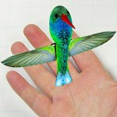

Home > Military
Military
{kind=link}
The Future of Weapons
For decades, the Pentagon’s investment in science and technology has produced widely hailed achievements like the Internet and the Global Positioning System. It has also backed quixotic and costly failures, like space-based lasers. And sometimes it has gone off the deep end, funding such things as psychic spies and weapons that defy the laws of physics.
The Department of Defense began systematically funding basic and applied research in a big way after World War II. Today the Pentagon’s investment in science R&D remains a cornerstone of the country’s national security strategy. Yet in the aftermath of the low-tech attacks of 9/11, the growing insurgency in Iraq, and the threat of worldwide terrorism, technology experts both within and outside the Pentagon are questioning whether Defense Department research is producing the results that America needs.
{kind=link}
The Future of Military Surveillance
The ability of unmanned aerial vehicles to collect information over battlefields has changed warfare. But what if those same abilities could be applied indoors? Enter the Nano Aerial Vehicles program, a Pentagon research effort led by the Defense Advanced Research Projects Agency. The idea is simple: Create a small unmanned aerial vehicle that can observe unobtrusively from inside a building, hovering to ensure steady camera images. In 2006, DARPA commissioned AeroVironment to create a tiny UAV that fits these criteria—by flying like a hummingbird.